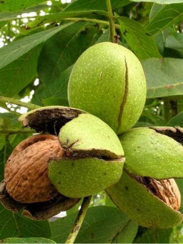
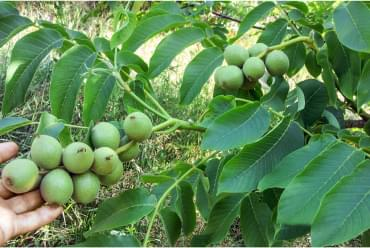
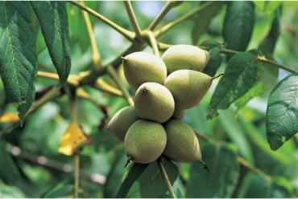
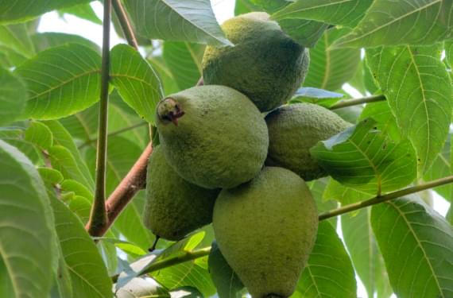
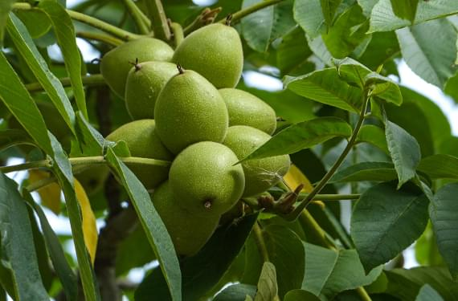
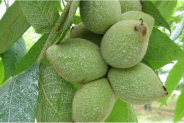
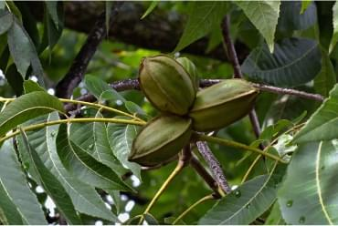
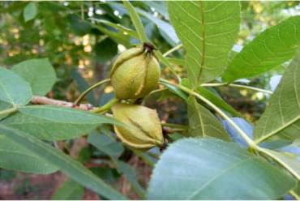

Давайте знакомиться!
Меня зовут Васин Евгений Анатольевич
Я - ученый агроном, селекционер, кандидат сельскохозяйственных наук
Я рад приветствовать всех посетителей моего сайта! Если Вы интересуетесь орехоплодными культурами, то, надеюсь, что представленная здесь информация будет вам полезна.
Немного обо мне
Родился в 1965 году в г. Донском Тульской области. Орехоплодными культурами занимаюсь с 1990 года. В 1997 г. окончил Санкт-Петербургский Государственный Аграрный Университет.
Тема дипломной работы - "Первичная оценка сеянцев ореха грецкого на зимостойкость и скороплодность в условиях Нечерноземья России". По окончании университета получил рекомендацию для поступления в аспирантуру.
В 2004 г. защитил кандидатскую диссертацию по теме: "Отбор и оценка перспективных форм ореха грецкого для Средней полосы России".
С 1998 по 2007 г.г. работал в ФГУК "Государственный мемориальный и природный заповедник "Музей - усадьба Л.Н.Толстого "Ясная Поляна" в должности агронома сада, а затем старшего научного сотрудника садово-паркового отдела.
По тематике опубликовано более 30 работ в научной, научно-популярной литературе, средствах массовой информации.
За время работы с орехоплодными культурами собран обширный генофонд этих культур в Тульской области, включающий 6 видов и свыше 300 гибридов рода Juglans L., 4 вида и гибрида рода Carya Nutt, 3 вида рода Corylus L. Особый интерес представляет коллекция скороплодных форм ореха грецкого, которые выдерживают условия Подмосковья и плодоносят. Всего в тульской коллекции насчитывается свыше 500 растений разных сортообразцов, часть из которых выдерживает без повреждений морозы в -36...-38,5°С. Большинство из них плодоносят.
Около 500 растений родов Juglans L. и Carya Nutt селекции Васина Е.А. произрастают на территории Мичуринского сада МСХА им.Тимирязева. Часть растений, выращенных мной, пополняет коллекции ботанических садов Москвы, Санкт-Петербурга, Вологды и ряда институтов России.
На сегодняшний день
можно отметить определенные достижения моей работы
30
Опыта и практики селекционных достижений
30
Работ в научной литературе и СМИ
300
Гибридов рода Juglans L, Carya Nutt и Corylus L
500
Растений
в крупных
ботанических садах
Немного истории
О роде Орех (Juglans)
Орех грецкий
 описаниеИсторически род Juglans возник в меловом периоде на территориях Юго-Западного Китая и Северного Индокитая, откуда его виды быстро распространились по всему Северному полушарию. В Северную Америку миграция шла через Европу, Гренландию, Берингию. В период оледенения (третичный период) виды, произраставшие в Северной Евразии и северных районах Северной Америки, погибли. После отхода ледника началось вторичное заселение северных областей сохранившимися на юге растениями. В настоящее время ареал рода не имеет определенной территории, но доходит в северных широтах нашей страны до 60° с.ш.
Гибриды ореха грецкого
 описаниеОрех маньчжурский
 описаниеОрех черный
 описаниеОрех Зибольда
 описаниеОрех сердцевидный
 описаниеОрех пекан
 описаниеКария сердцевидная
 описаниеМой ассортимент
Вашему вниманию предлагаю
Саженцы орехоплодных культур
Орех грецкий и его гибриды (обыкновенные и скороплодные формы), орех черный, маньжурсеий, пекан и др.

Саженцы прочих культур, декоративные растения
Гинкго билоба, кизил, тульские формы кизила, дуб краснолистный, пирамидальный, виноград, шелковица, азимина (банановое дерево), клен зеленокорый и многое другое.
Ассортимент постоянно расширяется!
Смотреть прайслистБуду рад вашим заказам!
Об оплате и доставке
Хочу обратить Ваше внимание на то, что заказ формируется после его подтверждения.
100% оплата до выкопки саженцев. Возможна оплата частями.
Оплата принимается наличными или безналичным переводом на банковскую карту.
Доставка заказов осуществляется по всей России по тарифам следующих организаций:
Также заказ можно получить путем самовывоза по адресу:
г. Тула ул. Набережная д.44(42)Смотреть на картеЗаказы принимаются круглый год!
Нахожусь на связи ежедневно с 9-00 до 21-00
Мой телефон и мессенджеры: +7-960-619-47-81
Моя электронная почта: vasin.oreh65@yandex.ru